| Safe Haskell | None |
|---|
QuipperLib.GateDecompositions
Description
This library contains special decompositions of particular gates into particular gate bases. It also contains functions for decomposing multiple controls.
For example, we provide particular decompositions of the Toffoli, Fredkin, doubly-controlled iX-gate, and certain other controlled Clifford gates, into the Clifford+T base. In some cases, we provide more than one decomposition.
Many of these decompositions are taken or adapted from the literature, for example, from:
- M. A. Nielsen and I. L. Chuang, Quantum Computation and Quantum Information, Cambridge University Press, 2002.
- M. Amy, D. Maslov, M. Mosca, and M. Roetteler, A meet-in-the-middle algorithm for fast synthesis of depth-optimal quantum circuits, IEEE Transactions on Computer-Aided Design of Integrated Circuits and Systems 32(6):818-830. Also available from http://arxiv.org/abs/1206.0758.
- A. Barenco, C. H. Bennett, R. Cleve, D. P. DiVincenzo, N. Margolus, P. Shor, T. Sleator, J. A. Smolin, and H. Weinfurter, Elementary gates for quantum computation, Physical Review A 52(5):3457-3467, 1995. Also available from http://arxiv.org/abs/quantph/9503016.
- P. Selinger, Quantum circuits of T-depth one, Physical Review A 87, 042302 (4 pages), 2013. Also available from http://arxiv.org/abs/1210.0974.
- B. Giles and P. Selinger, Exact synthesis of multiqubit Clifford+T circuits, Physical Review A 87, 032332 (7 pages), 2013. Also available from http://arxiv.org/abs/1212.0506.
- toffoli_NC_at :: Qubit -> Signed Qubit -> Signed Qubit -> Circ ()
- toffoli_AMMR_at :: Qubit -> Signed Qubit -> Signed Qubit -> Circ ()
- toffoli_V_at :: Qubit -> Signed Qubit -> Signed Qubit -> Circ ()
- toffoli_S_at :: Qubit -> Signed Qubit -> Signed Qubit -> Circ ()
- cc_iX_at :: Qubit -> Signed Qubit -> Signed Qubit -> Circ ()
- cc_iX_simple_at :: Qubit -> Signed Qubit -> Signed Qubit -> Circ ()
- cc_iX_S_at :: Qubit -> Signed Qubit -> Signed Qubit -> Circ ()
- ccZ_AMMR_at :: Qubit -> Signed Qubit -> Signed Qubit -> Circ ()
- ccZ_S_at :: Qubit -> Signed Qubit -> Signed Qubit -> Circ ()
- fredkin_at :: Qubit -> Qubit -> Signed Qubit -> Circ ()
- cH_AMMR_at :: Qubit -> Signed Qubit -> Circ ()
- controlled_W_at :: Qubit -> Qubit -> Signed Qubit -> Circ ()
- gate_W_CliffordT_at :: Qubit -> Qubit -> Circ ()
- controlled_iX_at :: Qubit -> Signed Qubit -> Circ ()
- controlled_S_at :: Qubit -> Signed Qubit -> Circ ()
- controlled_T_at :: Qubit -> Signed Qubit -> Circ ()
- controlled_V_at :: Qubit -> Signed Qubit -> Circ ()
- controlled_E_at :: Qubit -> Signed Qubit -> Circ ()
- controlled_YY_at :: Qubit -> Signed Qubit -> Circ ()
- toffoli_plain_at :: Qubit -> Signed Qubit -> Signed Qubit -> Circ ()
- cc_iX_plain_at :: Qubit -> Signed Qubit -> Signed Qubit -> Circ ()
- multi_cnot_barenco_at :: (Qubit -> Signed Qubit -> Signed Qubit -> Circ ()) -> (Qubit -> Signed Qubit -> Signed Qubit -> Circ ()) -> Qubit -> [Qubit] -> [Signed Qubit] -> Circ ()
- multi_ciX_noancilla_at :: (Qubit -> Signed Qubit -> Signed Qubit -> Circ ()) -> Qubit -> [Signed Qubit] -> Circ ()
- partition_controls :: [Signed Endpoint] -> ([Signed Qubit], [Signed Bit])
- with_signed_qubit :: Signed Qubit -> (Qubit -> Circ b) -> Circ b
- with_combined_controls :: (Qubit -> Signed Qubit -> Signed Qubit -> Circ ()) -> Int -> [Signed Endpoint] -> ([Signed Qubit] -> Circ a) -> Circ a
Decomposition of gates
toffoli_NC_at :: Qubit -> Signed Qubit -> Signed Qubit -> Circ ()Source
Decomposition of the Toffoli gate into the Clifford+T base, from Nielsen and Chuang (Figure 4.9). The first argument is the target, and the other two are the controls. The controls can be positive or negative.
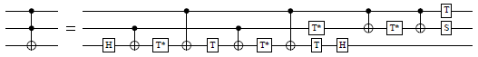
toffoli_AMMR_at :: Qubit -> Signed Qubit -> Signed Qubit -> Circ ()Source
Decomposition of the Toffoli gate into the Clifford+T base, from Amy et al. (http://arxiv.org/abs/1206.0758v3, Figure 13). The first argument is the target, and the other two are the controls. The controls can be positive or negative.
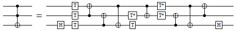
toffoli_V_at :: Qubit -> Signed Qubit -> Signed Qubit -> Circ ()Source
Decomposition of the Toffoli gate using controlled Clifford operators, from Nielsen and Chuang (Figure 4.8). The controls can be positive or negative.
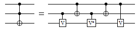
toffoli_S_at :: Qubit -> Signed Qubit -> Signed Qubit -> Circ ()Source
Decomposition of the Toffoli gate into the Clifford+T base, using T-depth 1 and four ancillas. From http://arxiv.org/abs/1210.0974 (Figure 1). The first argument is the target, and the other two are the controls. The controls can be positive or negative.
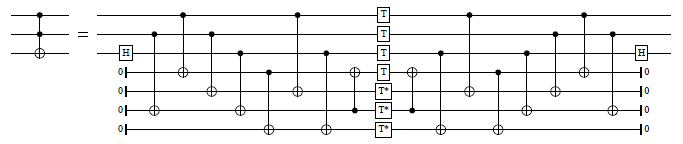
cc_iX_at :: Qubit -> Signed Qubit -> Signed Qubit -> Circ ()Source
Decomposition of the doubly-controlled iX-gate into the Clifford+T base, using T-count 4 and T-depth 2. Adapted from (http://arxiv.org/abs/1210.0974, Figure 10). The first argument is the target, and the other two are the controls. The controls can be positive or negative.
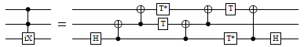
cc_iX_simple_at :: Qubit -> Signed Qubit -> Signed Qubit -> Circ ()Source
Decomposition of the doubly-controlled iX-gate into the Clifford+T base, using T-count 4, and using the control qubits only as controls. Derived from Nielsen and Chuang (Figure 4.9). The controls can be positive or negative.
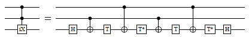
cc_iX_S_at :: Qubit -> Signed Qubit -> Signed Qubit -> Circ ()Source
Decomposition of the doubly-controlled iX-gate into the Clifford+T base, using T-depth 1 and one ancilla. Adapted from (http://arxiv.org/abs/1210.0974, Figure 9). The first argument is the target, and the other two are the controls. The controls can be positive or negative.
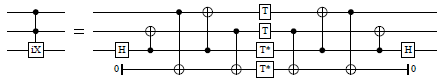
ccZ_AMMR_at :: Qubit -> Signed Qubit -> Signed Qubit -> Circ ()Source
Decomposition of the doubly-controlled Z-gate into the Clifford+T base. Adapted from Amy et al. (http://arxiv.org/abs/1206.0758v3, Figure 13). The controls can be positive or negative.
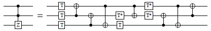
ccZ_S_at :: Qubit -> Signed Qubit -> Signed Qubit -> Circ ()Source
Decomposition of the doubly-controlled Z-gate into the Clifford+T base, using T-depth 1 and four ancillas. From Selinger (http://arxiv.org/abs/1210.0974, Figure 1). The controls can be positive or negative.
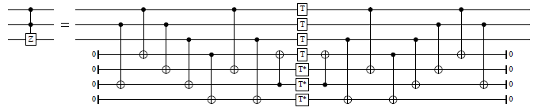
fredkin_at :: Qubit -> Qubit -> Signed Qubit -> Circ ()Source
Decomposition of the Fredkin (controlled-Swap) gate into the Clifford+T base. The first two arguments are the targets, and the last one the control. The controls can be positive or negative.
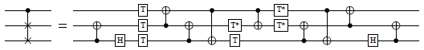
cH_AMMR_at :: Qubit -> Signed Qubit -> Circ ()Source
Decomposition of a controlled H-gate into the Clifford+T base. From Amy et al. (http://arxiv.org/abs/1206.0758v3, Figure 5(a)). The first argument is the target and the second one the control. The control can be positive or negative.
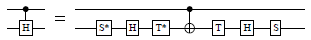
controlled_W_at :: Qubit -> Qubit -> Signed Qubit -> Circ ()Source
Decomposition of a controlled W-gate into the Clifford+T base. The first two arguments are the targets, and the last argument is the control. The control can be positive or negative.
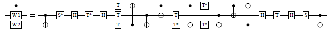
gate_W_CliffordT_at :: Qubit -> Qubit -> Circ ()Source
Decomposition of a W-gate into the Clifford+T base.
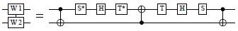
controlled_iX_at :: Qubit -> Signed Qubit -> Circ ()Source
Decomposition of a controlled iX-gate into the Clifford+T base. The first argument is the target, and the second one is the control. The control can be positive or negative.
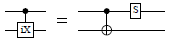
controlled_S_at :: Qubit -> Signed Qubit -> Circ ()Source
Decomposition of a controlled S-gate into the Clifford+T base. From Amy et al. (http://arxiv.org/abs/1206.0758v3, Figure 5(b)). The first argument is the target, and the second one is the control. The control can be positive or negative.
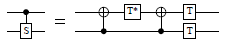
controlled_T_at :: Qubit -> Signed Qubit -> Circ ()Source
Decomposition of a controlled T-gate into the Clifford+T base. The first argument is the target, and the second one is the control. The control can be positive or negative.
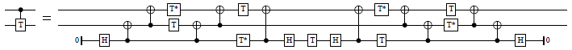
controlled_V_at :: Qubit -> Signed Qubit -> Circ ()Source
Decomposition of a controlled V-gate into the Clifford+T base. Adapted from Amy et al. (http://arxiv.org/abs/1206.0758v3, Figure 5(c)). Our V-gate is HS†H as in Nielsen and Chuang. The first argument is the target, and the second one is the control. The control can be positive or negative.
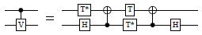
controlled_E_at :: Qubit -> Signed Qubit -> Circ ()Source
Decomposition of a controlled E-gate into the Clifford+T base. The first argument is the target, and the second one is the control. The control can be positive or negative.
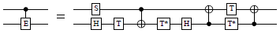
controlled_YY_at :: Qubit -> Signed Qubit -> Circ ()Source
Decomposition of a controlled Y-gate into the Clifford+T base. The gate is from the Ground State Estimation algorithm and is defined as Y = SHS, or equivalently,
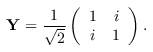
It should not be confused with the Pauli Y gate. The first argument is the target, and the second one is the control. The control can be positive or negative.
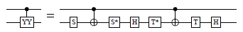
toffoli_plain_at :: Qubit -> Signed Qubit -> Signed Qubit -> Circ ()Source
A "plain" Toffoli gate, not decomposed. This is provided for
convenience, for example to use with with_combined_controls.
cc_iX_plain_at :: Qubit -> Signed Qubit -> Signed Qubit -> Circ ()Source
A "plain" doubly-controlled iX-gate, not decomposed. This is
provided for convenience, for example to use with
with_combined_controls.
multi_cnot_barenco_at :: (Qubit -> Signed Qubit -> Signed Qubit -> Circ ()) -> (Qubit -> Signed Qubit -> Signed Qubit -> Circ ()) -> Qubit -> [Qubit] -> [Signed Qubit] -> Circ ()Source
Decomposition of an m-times controlled not-gate, using m−2 ancillas that do not need be initialized in a particular state. Adapted from Barenco et al. (http://arxiv.org/abs/quantph/9503016, Lemma 7.2).
In addition to what is shown in Barenco et al., this function permits some Toffoli gates to be replaced by doubly-controlled iX-gates. This may be beneficial in gate bases, such as Clifford+T, where a doubly-controlled iX-gate has a simpler representation than a Toffoli gate.
The first argument is a Toffoli gate to use in the decomposition. The second argument may be either a Toffoli gate or a doubly-controlled iX gate. The third argument is the target, the fourth argument is a list of qubits to be used as ancillas, and the fifth argument is a list of signed controls. The ancillas need not be initialized, and are returned in their original state.
The size of this circuit is linear in the number of controls; the decomposition uses 4m−8 doubly-controlled gates for m ≥ 3.
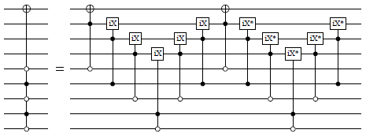
multi_ciX_noancilla_at :: (Qubit -> Signed Qubit -> Signed Qubit -> Circ ()) -> Qubit -> [Signed Qubit] -> Circ ()Source
Decomposition of a multiply-controlled iX-gate, using no ancillas. Adapted from Giles and Selinger (http://arxiv.org/abs/1212.0506, Section 5.2).
The first argument is a Toffoli gate or a doubly-controlled iX-gate. The third argument is the target, and the fourth argument is a list of signed controls.
The size of this circuit is linear in the number of controls; the decomposition uses 8m−32 doubly-controlled gates, 4 T-gates, and 2 H-gates, for m ≥ 6.
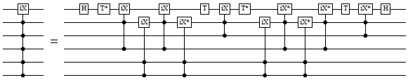
Decomposition of controls
partition_controls :: [Signed Endpoint] -> ([Signed Qubit], [Signed Bit])Source
Partition a list of controls into quantum and classical.
with_signed_qubit :: Signed Qubit -> (Qubit -> Circ b) -> Circ bSource
Given a function that expects a qubit (typically as a control), turn it into a function that can handle a signed (positive or negative) qubit. This is done by conjugating the circuit with negations on both sides, if the sign is negative. Usage:
with_signed_qubit c $ \q -> do <<<code using q>>>
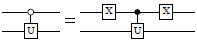
with_combined_controls :: (Qubit -> Signed Qubit -> Signed Qubit -> Circ ()) -> Int -> [Signed Endpoint] -> ([Signed Qubit] -> Circ a) -> Circ aSource
Decompose quantum controls recursively until at most n remain, and then pass these reduced controls to the given circuit. Precondition: n ≥ 1.
The decomposition is done using a Toffoli-like gate that is given as the first argument. This should be either a Toffoli gate, a doubly-controlled iX-gate, a decomposition thereof, or any other reversible ternary gate with the behavior
- |000〉 ↦ |0〉|φ0〉
- |001〉 ↦ |0〉|φ1〉
- |010〉 ↦ |0〉|φ2〉
- |011〉 ↦ |1〉|φ3〉,
where the states |φ0〉, …, |φ3〉 are arbitrary.
For example, when n=2, this typically yields a circuit such as the following (here shown using the doubly-controlled iX-gate):
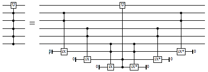
And for n=1, the circuit typically looks like this:
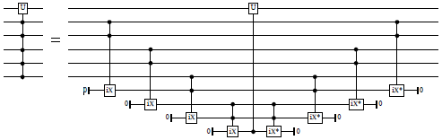
Classical controls are not decomposed, but are applied to the resulting circuit directly.